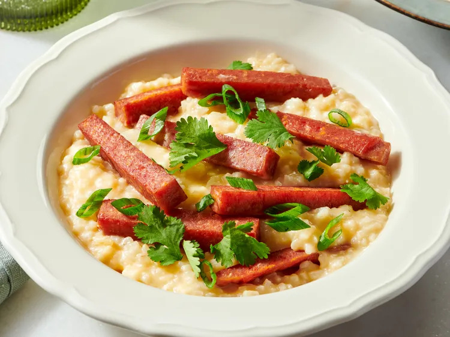

Spam Risotto Recipe
Back to Home

Description
Spam Risotto is a delicious and creamy dish that combines the savory flavors of Spam with the rich texture of risotto.
This recipe is perfect for a quick and satisfying meal.
Ingredients
- 2 1/2 cups chicken stock or broth, divided
- 3/4 cups arborio rice
- 2 teaspoons avocado oil
- 1 (12 ounce) can Spam®, cut into spears
- 1/2 cup grated Parmesan cheese
- 1 1/2 tablespoons salted butterr
- 1 teaspoon kosher salt
- 1/2 teaspoon freshly ground black pepper
- green onion and cilantro, for garnish
Instructions
- Preheat the oven to 350 degrees F (180 degrees C). Line a plate with paper towels.
- Bring chicken stock to a simmer. Add rice to an ovenproof pot. Pour in 2 cups stock and stir. Cover the pot with a lid.
- Bake rice in the preheated oven for 35 minutes, Keep remaining stock warm.
- Meanwhile, heat a cast iron skillet over medium-low heat; add avocado oil. Add SPAM and cook on all sides until browned and heated through. Remove to the prepared plate; set aside to keep warm.
- Remove the pot from the oven; stir in Parmesan, butter, and remaining 1/2 cup warm stock. Spoon into shallow bowls and layer on several pieces of SPAM. Garnish with green onion and cilantro.